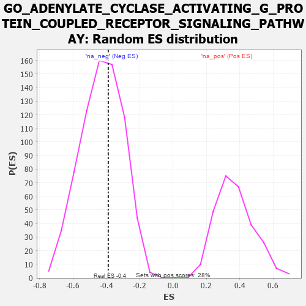

| | | Dataset | 7d |
| Phenotype | NoPhenotypeAvailable |
| Upregulated in class | na_neg |
| GeneSet | GO_ADENYLATE_CYCLASE_ACTIVATING_G_PROTEIN_COUPLED_RECEPTOR_SIGNALING_PATHWAY |
| Enrichment Score (ES) | -0.38812965 |
| Normalized Enrichment Score (NES) | -0.9081757 |
| Nominal p-value | 0.60497236 |
| FDR q-value | 0.9440427 |
| FWER p-Value | 1.0 |
Table: GSEA Results Summary
 Fig 1: Enrichment plot: GO_ADENYLATE_CYCLASE_ACTIVATING_G_PROTEIN_COUPLED_RECEPTOR_SIGNALING_PATHWAY
Fig 1: Enrichment plot: GO_ADENYLATE_CYCLASE_ACTIVATING_G_PROTEIN_COUPLED_RECEPTOR_SIGNALING_PATHWAY
Profile of the Running ES Score & Positions of GeneSet Members on the Rank Ordered List
| PROBE | GENE SYMBOL | GENE_TITLE | RANK IN GENE LIST | RANK METRIC SCORE | RUNNING ES | CORE ENRICHMENT | | 1 | MC4R | | | 57 | 2.491 | 0.1702 | No |
| 2 | ADCY8 | | | 124 | 1.418 | 0.2629 | No |
| 3 | GSK3A | | | 351 | 0.745 | 0.2875 | No |
| 4 | TSHR | | | 4322 | -0.063 | -0.2069 | No |
| 5 | ADRB2 | | | 4352 | -0.068 | -0.2057 | No |
| 6 | DRD2 | | | 5088 | -0.221 | -0.2823 | No |
| 7 | GPR4 | | | 5219 | -0.250 | -0.2808 | No |
| 8 | MC5R | | | 5689 | -0.371 | -0.3134 | No |
| 9 | CALCR | | | 5730 | -0.386 | -0.2909 | No |
| 10 | GALR2 | | | 6355 | -0.599 | -0.3267 | No |
| 11 | PTH1R | | | 6845 | -0.839 | -0.3284 | Yes |
| 12 | ABCA1 | | | 7243 | -1.113 | -0.2990 | Yes |
| 13 | ADCY1 | | | 7695 | -1.752 | -0.2309 | Yes |
| 14 | ADCY9 | | | 7704 | -1.783 | -0.1050 | Yes |
| 15 | PDE4D | | | 7764 | -1.944 | 0.0260 | Yes |
Table: GSEA details [plain text format]

Fig 2: GO_ADENYLATE_CYCLASE_ACTIVATING_G_PROTEIN_COUPLED_RECEPTOR_SIGNALING_PATHWAY: Random ES distribution
Gene set null distribution of ES for GO_ADENYLATE_CYCLASE_ACTIVATING_G_PROTEIN_COUPLED_RECEPTOR_SIGNALING_PATHWAY